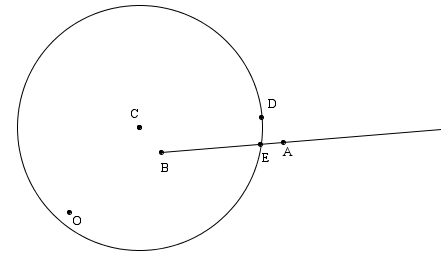
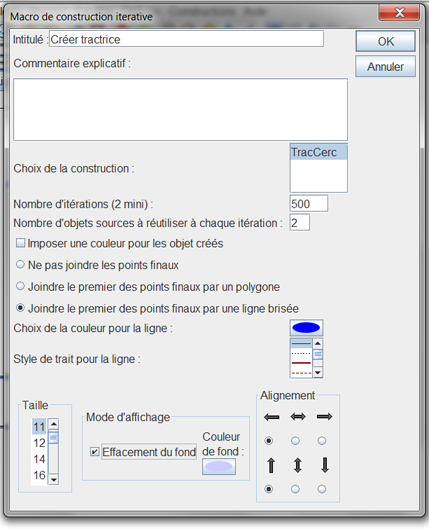
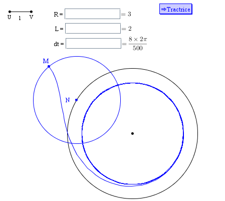

Exemple de création d'une construction itérative.
Une construction est implémentée de façon itérative lorsqu'elle est répétée plusieurs fois avec, à chaque étape, certains objets finaux jouant le rôle d'objets sources pour l'implémentation suivante de la même construction.
Il est très important de se rappeler que, lorsqu'on crée une construction, l'ordre des objets sources est l'ordre dans lequel les objets sources ont été désignés mais que, par contre, l'ordre des objets finaux est celui dans lequel ces objets ont été créés. De plus, les objets sources de type numérique sont toujours les premiers.
Dans cet exemple, nous allons créer une courbe tractrice.
Pour cela nous allons créer la construction qui devra être itérée.
Commencez par vérifier que l'unité de la figure est bien le radian (menu Options - Figure en cours, onglet Unité d'angle).
Commencez par créer un calcul nommé a qui contiendra comme formule 0.3 par exemple (icône  ).
).
Créez ensuite un point libre que nous appellerons O (icône  ). Ce sera le centre de notre rotation.
). Ce sera le centre de notre rotation.
Créez ensuite deux autres points libres que nous appellerons A et B.
A l'aide de l'icone  , créez l'image de B par la rotation de centre O d'angle a que nous appelerons C.
, créez l'image de B par la rotation de centre O d'angle a que nous appelerons C.
Avec l'icône  , créez l'image de C par la translation de vecteur BA (cliquez successivement sur B, A et C). Nous appellerons ce point D.
, créez l'image de C par la translation de vecteur BA (cliquez successivement sur B, A et C). Nous appellerons ce point D.
Créez maintenant le cercle de centre C et passant par D (icône  ), puis la demi-droite d'origine B passant par A (icône
), puis la demi-droite d'origine B passant par A (icône  ).
).
Avec l'outil  , créez l'intersection du cercle et de la demi-droite. Ce point E sera notre premier objet final.
, créez l'intersection du cercle et de la demi-droite. Ce point E sera notre premier objet final.
Les objets finaux doivent créés dans le même ordre que les objets initiaux correspondants. Nous ne pouvons donc pas choisir C comme deuxième objet final car C a été créé avant E.
Nous allons donc créer un clone de ce point : menu Créer - Clone d'objet et clic sur le point C.
Notre figure est prête pour créer notre construction.
Commençons par définir les objets sources numériques. Utilisez le menu Construction - Choix des objets sources - Numériques. A l'aide du bouton Insérer, ajoutez a à la liste des objets sources numériques.
Maintenant choisissons les objets sources graphiques (3 points). Utilisez le menu Construction - Choix des objets sources - Graphiques, cliquez, dans l'ordre, sur O, A et B (cet ordre est important).
Nous allons maintenant choisir les objets finaux (qui seront graphiques). Utilisez le menu Construction - Choix des objets finaux - Graphiques. Cliquez sur E et le point clone de C (choisissez point clone dans la boîte de dialogue qui s'ouvre). Cliquez sur le bouton droit de la souris pour dire que tous les objets finaux sont désignés.
Nous allons demander que tous les points E finaux soient reliés par une ligne brisée. Il est donc préférable que E et A soient masqués. Utilisez l'outil gomme ( ) pour les masquer.
) pour les masquer.
Utilisez maintenant le menu Construction - Finir la construction en cours.
Dans la boîte de dialogue qui s'ouvre, entrez comme Nom de la construction TracCerc et dans le champ infos :
#1: L'angle de rotation
#2: Le centre de rotation
#3: Le point à tracter
#4: Le point tracteur
Validez par OK.
Utilisez le menu Constructions - Enregistrer une construction de la figure dans un fichier pour enregistrer la construction TracCerc à l'endroit de votre choix sur votre machine (notez son emplacement).

Nous allons maintenant créer une nouvelle figure dans laquelle nous implémenterons notre construction de façon itérative.
Utilisez l'icône  pour créer une nouvelle figure.
pour créer une nouvelle figure.
A l'aide du menu Construction - Incorporer une construction dans la figure depuis un fichier, incorporez dans cette figure la construction précédemment enregistrée sur votre machine.
Commencez par créer trois calculs avec l'outil :
Un calcul nommé R contenant comme valeur 3.
Un calcul nommé L contenant comme valeur 2.
Un calcul nommé dt contenant comme formule 8*2*pi/500 (nous ferons ainsi 8 tours de cercle).
Utilisez l'icône  pour créer trois éditeurs de formule associés à R, L et dt comme ci-dessous.
pour créer trois éditeurs de formule associés à R, L et dt comme ci-dessous.
Créez maintenant un point libre et un cercle de centre ce point et de rayon R (icône  ).
).
Créez un point N lié à ce cercle (icône  ), puis un cercle de centre N et rayon L. Enfin créez un point M lié à ce dernier cercle.
), puis un cercle de centre N et rayon L. Enfin créez un point M lié à ce dernier cercle.
Nous allons maintenant créer une macro dont le but sera de construire la tractrice en itérant la construction TracCerc.
Utilisez le menu Macro - Nouvelle macro - Macro de construction - itérative.
Remplissez la boîte de dialogue comme ci-dessous et validez (pensez à cocher la case Joindre le premier des points finaux par une ligne brisée).
Les deux objets sources à réutiliser à chaque itération seront dt et le centre du cercle.

Une première boîte de dialogue s'ouvre pour vous demander l'angle de rotation : cliquez sur dt et validez.
Il est ensuite demandé dans ligne d'indication de cliquer sur le centre de la rotation : cliquez sur le centre du cercle.
Il est ensuite demandé de cliquer sur le point à tracter : Cliquez sur M.
Il est enfin demandé de cliquer sur le point tracteur : Cliquez sur N.
La macro apparaît sur la figure.
Enregistrez votre figure (avant d'avoir exécuté la macro).
Cliquez ensuite sur l'outil  d'exécution de macro.
d'exécution de macro.
Vous obtenez la figure ci-dessous. Vous pouvez capturer M, N et changer les valeurs de R et de L.
Attention : Si vous sauvegardez votre figure maintenant, cela fera un gros fichier car la figure contient maintenant des milliers d'objets.

Remarque : Il est aussi possible d'implémenter cette construction de façon iterative avec le menu Constructions - Implémenter une construction de façon récursive.
Created with the Personal Edition of HelpNDoc: Full featured multi-format Help generator